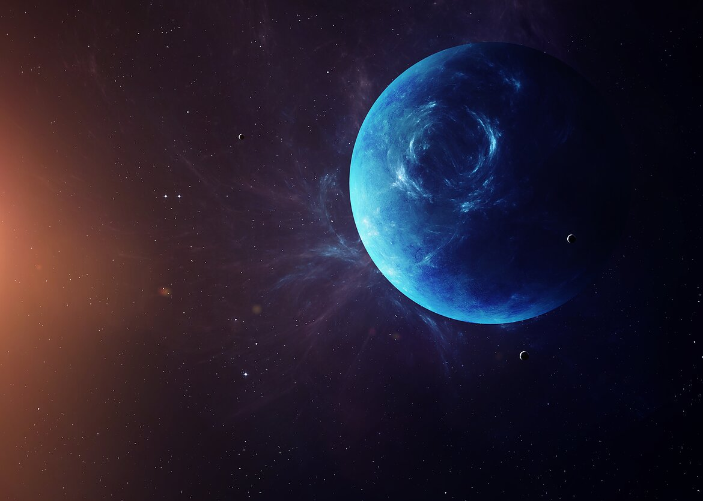

Šaltiniai
https://en.wikipedia.org/wiki/Voyager_2
https://lt.wikipedia.org/wiki/Neptūnas_(planeta)
https://lt.wikipedia.org/wiki/Neptūno_palydovai
https://www.vle.lt/straipsnis/neptunas-1

© Matas Radioniovas